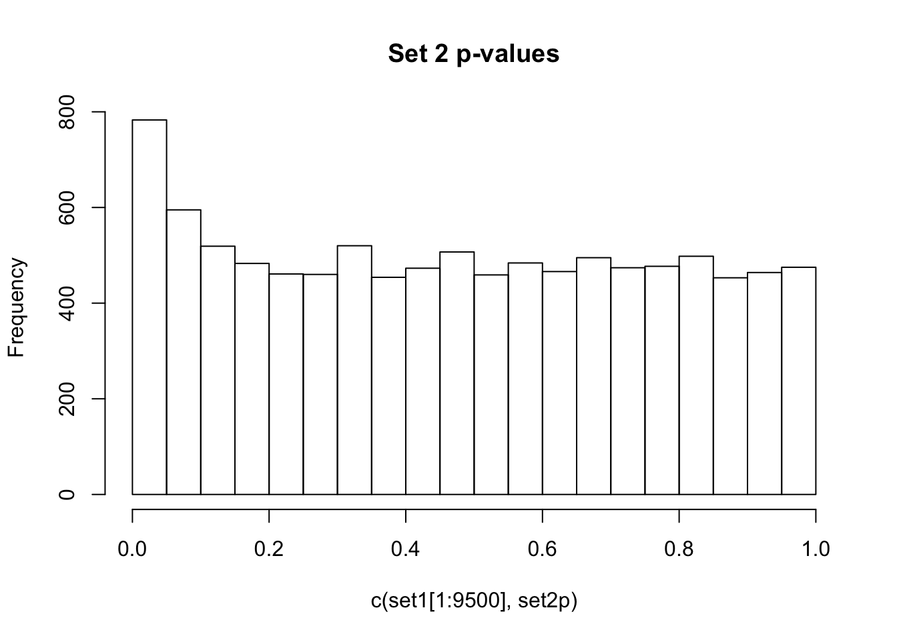
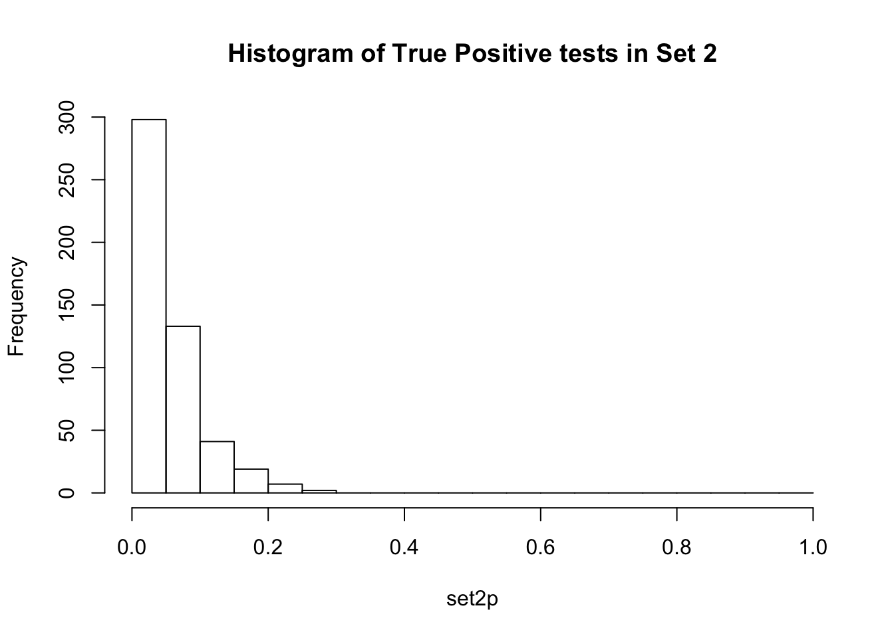

Multiple Testing Correction
Anthony Hung
2019-04-24
Last updated: 2020-03-30
Checks: 7 0
Knit directory: MSTPsummerstatistics/
This reproducible R Markdown analysis was created with workflowr (version 1.5.0). The Checks tab describes the reproducibility checks that were applied when the results were created. The Past versions tab lists the development history.
Great! Since the R Markdown file has been committed to the Git repository, you know the exact version of the code that produced these results.
Great job! The global environment was empty. Objects defined in the global environment can affect the analysis in your R Markdown file in unknown ways. For reproduciblity it’s best to always run the code in an empty environment.
The command set.seed(20180927) was run prior to running the code in the R Markdown file. Setting a seed ensures that any results that rely on randomness, e.g. subsampling or permutations, are reproducible.
Great job! Recording the operating system, R version, and package versions is critical for reproducibility.
Nice! There were no cached chunks for this analysis, so you can be confident that you successfully produced the results during this run.
Great job! Using relative paths to the files within your workflowr project makes it easier to run your code on other machines.
Great! You are using Git for version control. Tracking code development and connecting the code version to the results is critical for reproducibility. The version displayed above was the version of the Git repository at the time these results were generated.
Note that you need to be careful to ensure that all relevant files for the analysis have been committed to Git prior to generating the results (you can use wflow_publish or wflow_git_commit). workflowr only checks the R Markdown file, but you know if there are other scripts or data files that it depends on. Below is the status of the Git repository when the results were generated:
Ignored files:
Ignored: .DS_Store
Ignored: .RData
Ignored: .Rhistory
Ignored: .Rproj.user/
Ignored: analysis/.RData
Ignored: analysis/.Rhistory
Ignored: data/.DS_Store
Untracked files:
Untracked: analysis/resampling.Rmd
Untracked: data/avocado.csv
Unstaged changes:
Modified: analysis/dataviz.Rmd
Modified: analysis/index.Rmd
Note that any generated files, e.g. HTML, png, CSS, etc., are not included in this status report because it is ok for generated content to have uncommitted changes.
These are the previous versions of the R Markdown and HTML files. If you’ve configured a remote Git repository (see ?wflow_git_remote), click on the hyperlinks in the table below to view them.
| File | Version | Author | Date | Message |
|---|---|---|---|---|
| html | 310d040 | Anthony Hung | 2020-02-20 | Build site. |
| html | 5a37a3e | Anthony Hung | 2020-02-14 | Build site. |
| html | 96722bd | Anthony Hung | 2019-08-07 | Build site. |
| Rmd | 7c27654 | Anthony Hung | 2019-08-07 | add NaiveBayes |
| html | 15ca1f1 | Anthony Hung | 2019-07-18 | Build site. |
| html | a3aa9e0 | Anthony Hung | 2019-07-18 | Build site. |
| html | ceb577e | Anthony Hung | 2019-07-12 | Build site. |
| Rmd | 6234571 | Anthony Hung | 2019-07-12 | commit changes |
| html | 397882b | Anthony Hung | 2019-05-30 | Build site. |
| html | 6d3e1c8 | Anthony Hung | 2019-05-28 | Build site. |
| html | c117ef1 | Anthony Hung | 2019-05-28 | Build site. |
| html | b291d24 | Anthony Hung | 2019-05-24 | Build site. |
| html | 4e210d6 | Anthony Hung | 2019-05-24 | Build site. |
| html | c4bdfdc | Anthony Hung | 2019-05-22 | Build site. |
| Rmd | dd1e411 | Anthony Hung | 2019-05-22 | before republishing syllabus |
| html | 096760a | Anthony Hung | 2019-05-19 | Build site. |
| Rmd | 193ab25 | Anthony Hung | 2019-05-19 | additions to complete mult testing |
| html | 193ab25 | Anthony Hung | 2019-05-19 | additions to complete mult testing |
| html | da98ae8 | Anthony Hung | 2019-05-18 | Build site. |
| Rmd | bb90220 | Anthony Hung | 2019-05-18 | commit before publishing |
| html | bb90220 | Anthony Hung | 2019-05-18 | commit before publishing |
| Rmd | 239723e | Anthony Hung | 2019-05-08 | Update learning objectives |
| html | 239723e | Anthony Hung | 2019-05-08 | Update learning objectives |
| html | 2ec7944 | Anthony Hung | 2019-05-06 | Build site. |
| Rmd | d45dca4 | Anthony Hung | 2019-05-06 | Republish |
| html | d45dca4 | Anthony Hung | 2019-05-06 | Republish |
| html | ee75486 | Anthony Hung | 2019-05-05 | Build site. |
| html | 5ea5f30 | Anthony Hung | 2019-04-30 | Build site. |
| Rmd | 22ae3cd | Anthony Hung | 2019-04-30 | Add HMM file |
| html | e746cf5 | Anthony Hung | 2019-04-29 | Build site. |
| Rmd | 133df4a | Anthony Hung | 2019-04-29 | introR |
| html | 22b3720 | Anthony Hung | 2019-04-26 | Build site. |
| html | ddb3114 | Anthony Hung | 2019-04-26 | Build site. |
| html | 413d065 | Anthony Hung | 2019-04-26 | Build site. |
| html | 6b98d6c | Anthony Hung | 2019-04-26 | Build site. |
| Rmd | 9f13e70 | Anthony Hung | 2019-04-25 | finish CLT |
| html | 9f13e70 | Anthony Hung | 2019-04-25 | finish CLT |
Introduction
Multiple testing describes situations where many hypotheses are simultaneously investigated from a given dataset. Correct treatment of statistics when working with multiple hypotheses is paramount, as mistakes can easily lead to false interpretations of results and many false positives. Our objectives today are to review the framework behind hypothesis testing in single hypotheses, why this framework falls apart in multiple testing, and different methods that have been proposed to correct for multiple testing.
Hypothesis testing
The basic idea in hypothesis testing is to use data or observations to choose between two possible realities: a null hypothesis or an alternative hypothesis. As a reminder, the null hypothesis usually is the ‘status quo’ or less interesting view of the world. The alternative hypothesis is the opposite of the null hypothesis.
The “issue” of multiple testing
As many scientific fields enter an age of “Big Data,” where the ability to collect and work with data from a large number of measurements gives rise to the ability to test many hypotheses at the same time. However, as scientistists tests many more hypotheses, the standard view of hypothesis testing falls apart.
To illustrate this, consider the xkcd comic (https://xkcd.com/882/). Obviously, something is not right with the conclusions of the study, since we all have an intuition that green jelly beans do not have any true association with skin conditions. To better understand why mutliple testing can easily lead to false positive associations unless adequately treated, let us walk through the calculations for the probability of making a Type 1 error given the number of tests you are performing.
Case 1: Performing 1 test
Let us say we are performing the study in the comic and testing for a link between purple jelly beans and acne at a significance level \(\alpha = 0.05\). What is the probability that we make a type 1 error?
Case 2: Performing 20 tests
Now, let us test for an association between 20 different colors of jelly beans and acne at a significance level of \(\alpha = 0.05\) for each individual test. What is the probability that we make at least one type 1 error now?
This makes sense if we go back to the definition of a p-value. The p-value measures the probability of seeing an observation as extreme or more extreme than your data given that the data were drawn from a null distribution. If we have a p-value of 0.05, that is equivalent to saying that 5% of the time, in a universe where the null hypothesis is true, we would see data as extreme or more extreme that our data. (See drawing on chalkboard). If we perform 100 tests in a universe where the null hypothesis is true, then we expect 5 of those tests to have p-values less than 0.05! The number of expected false positives increases with the number of independent tests you perform. Clearly, we need to take into account the number of tests when setting our significance threshold.
In the above two examples, what we calculated was the probability of making at least one type 1 error in all the independent tests we were performing. This is otherwise known as the Family-Wise Error Rate (FWER).
Looking at multiple testing and FWER graphically
This graph plots the # of independent tests performed on the x axis, and the probability of seeing at least one type 1 error (the FWER) on the y axis, given an \(\alpha = 0.05\).
library(cowplot)
********************************************************Note: As of version 1.0.0, cowplot does not change the default ggplot2 theme anymore. To recover the previous behavior, execute:
theme_set(theme_cowplot())********************************************************library(ggplot2)
ggplot(data.frame(x=c(0,60)), aes(x)) +
stat_function(fun=function(x)1-(1-0.05)^x, geom="line", aes(colour="square")) + xlab("# of independent tests") + ylab("FWER") + theme(legend.position = "none")
As you can appreciate, the FWER increases quickly with every increase in the number of tests you are performing!
Controlling type 1 error for situations with multiple tests:
We have two sets of options to control for our type 1 error rate when performing multiple tests:
Control the FWER to be under a certain value by setting an \(\alpha_{corrected}\) for each individual test.
Control the false discovery rate (FDR). In short, FDR methods control the proportion of false positive tests to all positive tests.
Bonferroni Correction
The Bonferroni correction is one of the most common and the simplest method for correcting for multiple testing, and it can be applied to cases where you are performing multiple dependent or independent tests. The theoretical basis behind this correction is to attempt to adjust our FWER to match our desired value of \(\alpha\).
To carry out the correction, simply set your corrected \[\alpha_{corrected} = \frac{\alpha}{m}\], where m is the number of tests you are performing. Rejecting the null hypothesis for each individual test at a significance level of \(\leq \frac{\alpha}{m}\) keeps our FWER at \(\leq \alpha\).
The proof for this inequality comes from Boole’s inequality, which states that “for any finite countable set of events, the probability that at least one of the events happens is no greater than the sum of the probabilities of the individual events” (https://en.wikipedia.org/wiki/Boole%27s_inequality). In this case, \(\alpha \leq m \cdot \alpha_{corrected}\).
Exercise: In the case where we tested for an association between 20 colors of jelly beans and acne, what would our Bonferroni corrected \(\alpha\) be?
An alternative way to perform the Bonferroni correction is not to adjust our significance level, but rather adjust our p-values themselves. To do this, simply multiply your p-values by the number of tests performed and use the uncorrected \(\alpha\) as your significance level.
\[p_{adjusted} = m \cdot p\]
R has a function to adjust p-values through a variety of methods, including Bonferroni:
adjusted_pvals <- p.adjust(c(0.05,0.0000001, 0.8), method = "bonferroni")
print(adjusted_pvals)[1] 1.5e-01 3.0e-07 1.0e+00Although the Bonferroni correction is relatively simple to implement, in practice it a very conservative correction (meaning that through employing it, you will likely be missing out on many true positives through overcorrecting for multiple tests, amplifying the number of FNs). This effect is especially powerful when you are carrying out a large number of tests or when the tests you are performing are not completely independent.
To explain why the Bonferroni correction is very conservative, we can explore what it does. The correction method sets the FWER to be at most \(\alpha\), which works well in cases when tests are truly independent. However, if there are any correlations/dependence (no matter how small), then the Bonferroni correction would be more stringent than strictly necessary. We rarely will run into situations in Biology where our tests are truly independent. For example, the genes expressed in your cells may exist in pathways, where the expression of one gene is correlated with the expression of other genes in the same pathway. Although individual jelly beans may have different flavoring compounds, they all share a large majority of their ingredients and are made in the same factory by largely the same machinery.
Because of this flaw in the Bonferroni correction, much effort has been devoted to developing methods that can correct for the number of FPs while not inflating the number of FNs.
False Discovery Rates, q values, and the Benjamini-Hochberg Method
False discovery rates
In addition the the FWER, a different framework to conceptualize the number of incorrect conclusions you draw from performing a set of hypothesis tests is the False discovery rate (FDR).
When we set \(\alpha = 0.05\) we are stating that about 5% of truly null tests will be called significant. An FDR = 0.05 means that among the tests that are called significant (positive tests, or “discoveries”), about 5% will turn out to be null (false positive tests, or “false discoveries”). In other words, \(\alpha = 0.05\) means that if we performed 100 tests under the null, 5 of them would be false positives. FDR = 0.05 means that if we performed X number of tests and found 100 significant tests, 5 of those significant results would actually be false positives. The first situation says that 5% of our tests will be false positives. The second situation tells us that 5% of our significant tests will be false positives.
\[FDR = \frac{FP}{FP+TP}\]
False discovery rate methods allow a certain number of false positives to slip through, but by doing so do a better job of finding more true positives (reducing the number of false negative tests).
q-values
Q-values are the name given to the adjusted p-values found using an optimised FDR approach. The FDR approach uses characteristics of a p-value distribution to produce a list of q-values.
Exercise: If we were to perform a bunch of tests in a universe where all the null hypotheses are true and calculate their p-values, what would the distribution of p-values look like?
Observe the distributions of p-values collected from 2 different sets of 10000 tests. What is different between the two? Which do you think corresponds to a set of tests where the null hypothesis is true for all the tests?
| Version | Author | Date |
|---|---|---|
| bb90220 | Anthony Hung | 2019-05-18 |

If there are no true positives in a set of tests, you will expect to see a distribution more like the first distribution, but if there are true positives in a set of tests you will expect to see a distribution more like the second. So, even if there are no true positives in the experiment, we still expect, by chance, to get p-values < 0.05. These are all false positives. However, even in an experiment with true positives, we are still unsure if a p-value < 0.05 represents a true positive or a false positive. This is because in the second set, the majority of tests are consistent with the null hypothesis, but there are a minority which are consistent with true positives. The resulting histogram is the sum of two histograms (one representing all the null tests, and one representing all the true positive tests). See below for a graphical depiction of this fact. Therefore, in the composite plot the true positives are mixed in with the false positives at the left side of the distribution! The q-value approach tries to find the height of the histogram where the p-value distribution flattens out on the right (where the majority of tests are drawn from the null distribution) and uses this information to determine what proportion of the values on the left side of the distribution are false positives vs true positives, giving us FDR adjusted p-values (q-values).
| Version | Author | Date |
|---|---|---|
| bb90220 | Anthony Hung | 2019-05-18 |

A q-value threshold of 0.05 means that 0.05 of significant results will result in false positives. Another way to think about this is if we arrange all the q values for our set of tests from smallest to largest and pick one (for example a q-value of 0.10), then if we were to reject all hypotheses with a q-value less than this number in our set, we would expect 10% of them to be false positives. The most popular method of calculating q-values is known as the Benjamini-Hochberg method.
Benjamini-Hochberg Method
Before going into the mathematical details of the BH method, let us return to the p-value distribution we described above.

| Version | Author | Date |
|---|---|---|
| 193ab25 | Anthony Hung | 2019-05-19 |
Given that we know that the right side of the distribution is largely made up by null tests (which are uniformly flattly distributed between 0 and 1), and the true positive tests are concentrated around p-values of 0, how would you try to find a set of tests that would give you the highest proportion of true positives?
The BH method does something similar to the quick and dirty method we employed above, but instead of reporting p-values, it adjusts them to assign q-values to each test instead.
Actually performing the method:
The mathematics of employing the BH method are actually very simple. Here are the steps assuming you have a set of p-values from a set of hypothesis tests.
- Order the p-values from smallest to largest and rank them from 1 (smallest) to m (largest)
- Adjust the p-values using this equation: \[q_i = min\{\frac{p_i m}{i}, q_{i+1}\}\]
where \(q_i, p_i\) represents the q-value or p-value for the test ranked \(i\), m represents the total number of tests in your set, and \(q_{i+1}\) is the q-value for the next largest rank test.
And that’s it! You would then interpret the q-values as we did above: “If we arrange all the q values for our set of tests from smallest to largest and pick one (for example a q-value of 0.10), then if we were to reject all hypotheses with a q-value less than this number in our set, we would expect 10% of them to be false positives.”
Taking a closer look at the q-value equation, we can figure out what each part means.
The numerator (\(p_i m\)) represents the expected number of FP if you accept all the tests with p-values of \(p_i\) or smaller. Why is this the case?
The denominator (\(i\)) represents the number of hypotheses you will reject at a threshold equal to \(q_i\). Why is this?
Finally, why do we take the minimum value between \(\frac{p_i m}{i}\) and \(q_{i+1}\)?
Let’s walk through an example on the board:
Suppose we have p-values for 10 tests: {0.01, 0.11, 0.21, 0.31, 0.41, 0.51, 0.61, 0.71, 0.81, 0.91}. We want to perform a Benjamini-Hochberg procedure on the p-values to obtain q-values.
Final thoughts
Methods that control for FWER (i.e. Bonferroni correction) maximize the purity of the discoveries you make (you can be more confident that the tests you call positive are indeed true positives rather than false postiives) at the cost of the completeness of those discoveries (you miss many true positives by commiting more type 2 errors). These types of corrections are most appropriate in situations where the costs of a false positive are very high.
Methods that control for FDR (i.e. Benjamini-Hochberg) relax the constraint on the purity of the discoveries you make (you still control the number of false positives you expect to have) in order to increase the completeness of your discoveries substantially. These types of corrections are most appropriate when you expect to have several true positives and can afford to have some false positives.
Exercise:
Write a function that takes as input a vector of p-values and performs a Benjamini-Hochberg procedure to return a vector of q-values. Plot histograms of the vector of p-values in Set3 (found below) before and after correction.
set.seed(1234)
set3 <- c(runif(10000), rexp(500, rate = 2)/10)
sessionInfo()R version 3.6.1 (2019-07-05)
Platform: x86_64-apple-darwin15.6.0 (64-bit)
Running under: macOS Mojave 10.14.6
Matrix products: default
BLAS: /Library/Frameworks/R.framework/Versions/3.6/Resources/lib/libRblas.0.dylib
LAPACK: /Library/Frameworks/R.framework/Versions/3.6/Resources/lib/libRlapack.dylib
locale:
[1] en_US.UTF-8/en_US.UTF-8/en_US.UTF-8/C/en_US.UTF-8/en_US.UTF-8
attached base packages:
[1] stats graphics grDevices utils datasets methods base
other attached packages:
[1] ggplot2_3.2.1 cowplot_1.0.0 workflowr_1.5.0
loaded via a namespace (and not attached):
[1] Rcpp_1.0.3 compiler_3.6.1 pillar_1.4.3 later_1.0.0
[5] git2r_0.26.1 tools_3.6.1 digest_0.6.23 evaluate_0.14
[9] lifecycle_0.1.0 tibble_2.1.3 gtable_0.3.0 pkgconfig_2.0.3
[13] rlang_0.4.4 yaml_2.2.1 xfun_0.12 withr_2.1.2
[17] stringr_1.4.0 dplyr_0.8.4 knitr_1.26 fs_1.3.1
[21] rprojroot_1.3-2 grid_3.6.1 tidyselect_1.0.0 glue_1.3.1
[25] R6_2.4.1 rmarkdown_1.18 farver_2.0.3 purrr_0.3.3
[29] magrittr_1.5 whisker_0.4 backports_1.1.5 scales_1.1.0
[33] promises_1.1.0 htmltools_0.4.0 assertthat_0.2.1 colorspace_1.4-1
[37] httpuv_1.5.2 labeling_0.3 stringi_1.4.5 lazyeval_0.2.2
[41] munsell_0.5.0 crayon_1.3.4